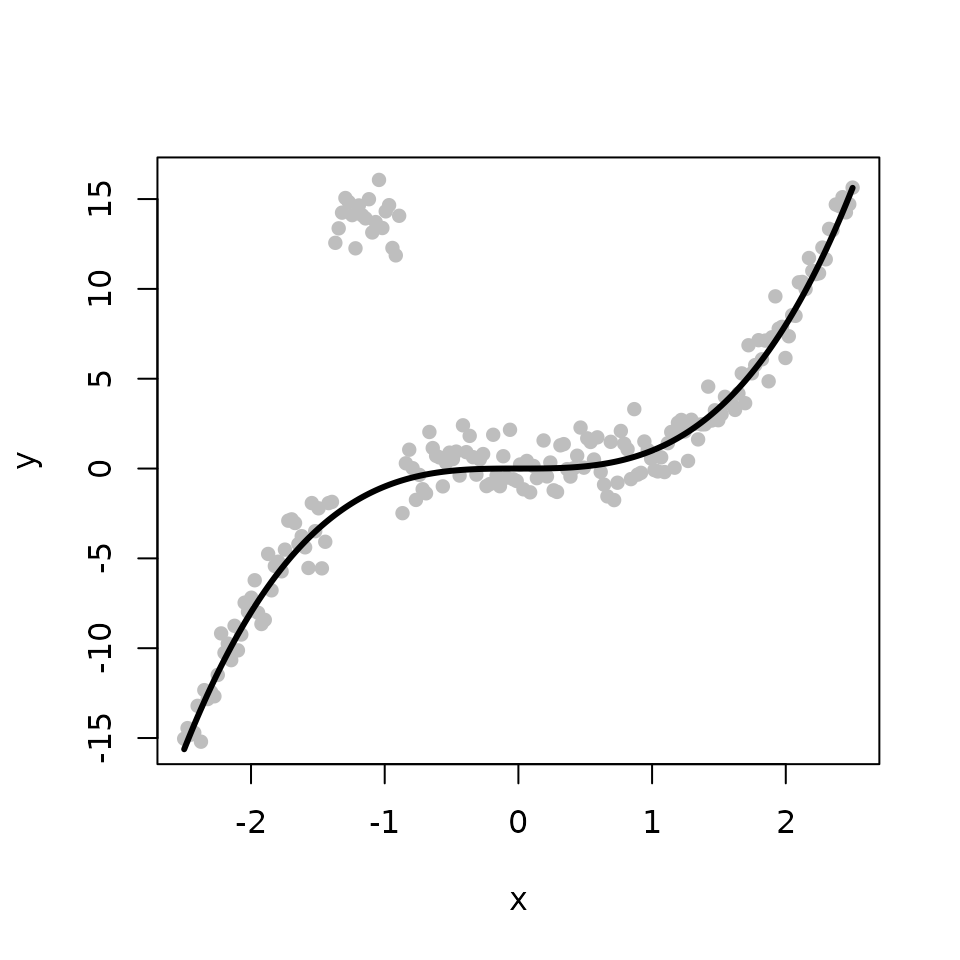
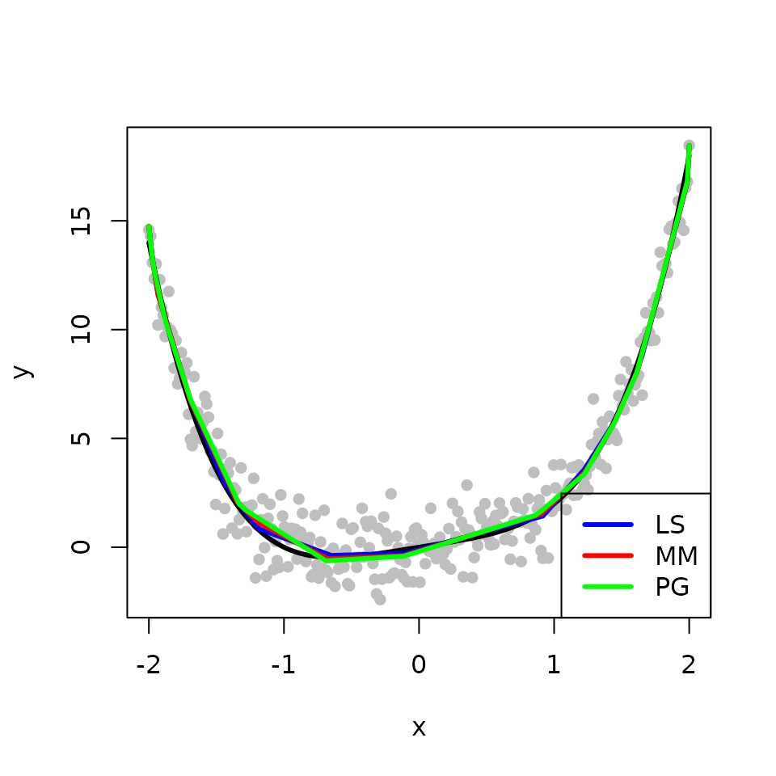
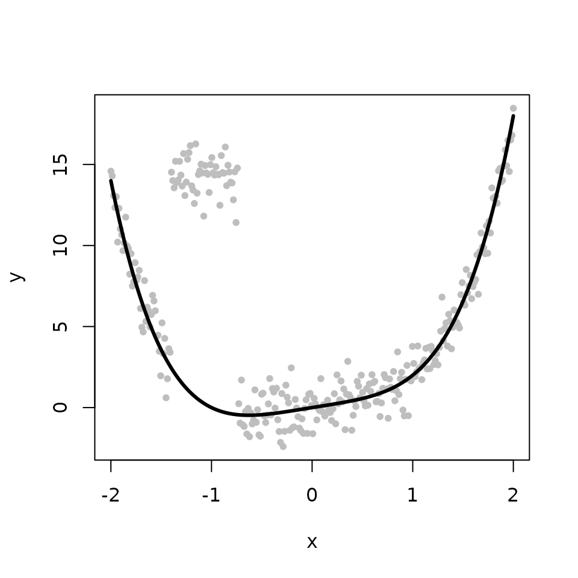
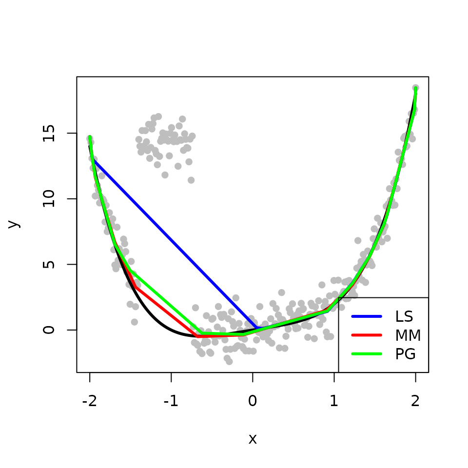
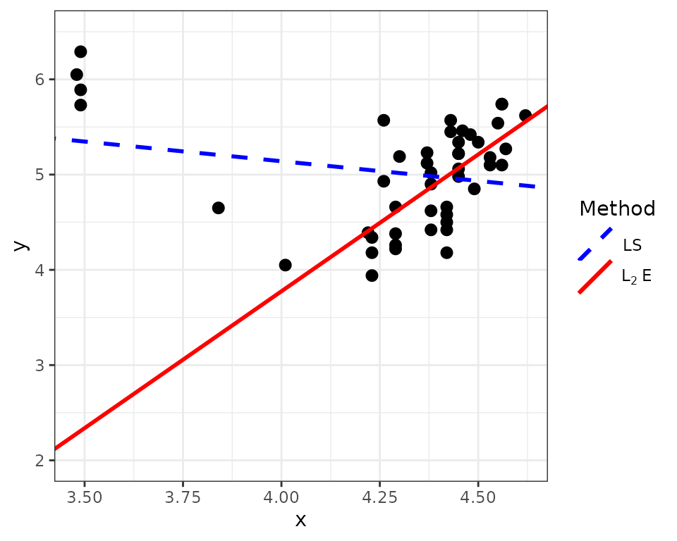

Introduction to the L2E Package
Jocelyn T. Chi and Eric C. Chi
l2e-intro.Rmd\[ \newcommand{\vbeta}{\boldsymbol{\beta}} \]
Overview
The L2E package implements the computational framework in “A User-Friendly Computational Framework for Robust Structured Regression with the L\(_2\) Criterion” by Jocelyn T. Chi and Eric C. Chi. This vignette provides code to replicate some examples illustrating the framework in that paper.
Examples
Multivariate Regression
The first example provides code to perform multivariate L\(_{2}\)E regression with the Italian bank data from the paper. We begin by loading the bank data from the L2E package.
library(L2E)
y <- bank$y
X <- as.matrix(bank[,1:13])
X0 <- as.matrix(cbind(rep(1,length(y)), X))
tau_initial <- 1/mad(y)
beta_initial <- matrix(0, 14, 1)The l2e_regression function performs multivariate regression via the L\(_{2}\) criterion, also called LTE multivariate regression, as described in the paper. It simultaneously obtains an estimate for the coefficient vector \(\vbeta\) and the precision \(\tau\).
sol <- l2e_regression(y, X0, tau_initial, beta_initial)We can use the estimates for \(\vbeta\) and \(\tau\) in sol$beta and sol$tau to identify outlying observations, depicted in blue in the figure below.
betaEstimate <- sol$beta
tauEstimate <- sol$tau
r <- y - X0 %*% betaEstimate
outliers <- which(abs(r) > 3/tauEstimate)
l2e_fit <- X0 %*% betaEstimate
plot(y, l2e_fit, ylab='Predicted values', pch=16, cex=0.8)
points(y[outliers], l2e_fit[outliers], pch=16, col='blue', cex=0.8)
For additional figures and discussion on LTE multivariate regression, please refer to the paper.
Isotonic Regression
The second example illustrates how to perform robust isotonic regression via the L\(_{2}\) criterion, also called LTE isotonic regression. We begin by generating the true fit \(f\) from a cubic function (depicted by the black line on the figure below). We obtain the observed response by adding some Gaussian noise to \(f\) (depicted by the gray points on the figure below).
set.seed(12345)
n <- 200
tau <- 1
x <- seq(-2.5, 2.5, length.out=n)
f <- x^3
y <- f + (1/tau)*rnorm(n)
plot(x, y, pch=16, col='gray', cex=0.8)
lines(x, f, col='black', lwd=3)
The l2e_regression_isotonic function performs robust isotonic regression as described in the paper. We use it to obtain an estimate for the underlying fit \(f\). The true fit is shown in black while the maximum likelihood estimator (MLE) and the L\(_{2}\)E are shown in red and blue, respectively. In the absence of outliers, the MLE and the L\(_{2}\)E provide similar estimates.
tau_initial <- 1
beta_initial <- y
sol <- l2e_regression_isotonic(y, beta_initial, tau_initial)
isotonic_LTE <- sol$beta
plot(x, y, pch=16, col='gray', cex=0.8)
lines(x, f, col='black', lwd=3)
isotonic_MLE <- gpava(1:n, y)$x
lines(x, isotonic_MLE, col='red', lwd=3)
lines(x, isotonic_LTE, col='blue', lwd=3)
Next, we introduce some outliers by perturbing some of the observed responses.
ix <- 0:9
y[45 + ix] <- 14 + rnorm(10)
plot(x, y, pch=16, col='gray', cex=0.8)
lines(x, f, col='black', lwd=3)
We obtain the MLE and the L\(_{2}\)E fits with the outlying points. The L\(_{2}\)E fit is less sensitive to outliers than the MLE in this example.
plot(x, y, pch=16, col="gray", cex=0.8)
lines(x, f, col='black', lwd=3)
isotonic_MLE <- gpava(1:n, y)$x
lines(x, isotonic_MLE, col='red', lwd=3)
sol <- l2e_regression_isotonic(y, beta_initial, tau_initial)
isotonic_LTE <- sol$beta
lines(x, isotonic_LTE, col='blue', lwd=3)
Shape-Restricted Convex Regression
The third example illustrates how to perform robust shape-restricted convex regression via the L\(_{2}\) criterion, also called LTE convex regression. We begin by simulating a convex function \(f\). The observed response is composed of \(f\) with some additive Gaussian noise.
set.seed(12345)
n <- 200
tau <- 1
x <- seq(-2, 2, length.out=n)
f <- x^4 + x
y <- f + (1/tau) * rnorm(n)
plot(x, y, pch=16, col='gray', cex=0.8)
lines(x, f, col='black', lwd=3)
The l2e_regression_convex function performs robust convex regression via the L\(_{2}\) criterion as described in the paper. We use it to obtain an estimate for the underlying convex function \(f\). The true fit is shown in black while the MLE and the L\(_{2}\)E are shown in red and blue, respectively. In the absence of outliers, the MLE and the L\(_{2}\)E again provide similar estimates.
tau_initial <- 1
beta_initial <- y
sol <- l2e_regression_convex(y, beta_initial, tau_initial)
convex_LTE <- sol$beta
plot(x, y, pch=16, col='gray', cex=0.8)
lines(x, f, col='black', lwd=3)
convex_MLE <- fitted(cobs::conreg(y, convex=TRUE))
lines(x, convex_MLE, col='red', lwd=3)
lines(x, convex_LTE, col='blue', lwd=3)Next, we again introduce some outlying points.
ix <- 0:9
y[45 + ix] <- 14 + rnorm(10)
plot(x, y, pch=16, col='gray', cex=0.8)
lines(x, f, col='black', lwd=3)
We obtain the MLE and the L\(_{2}\)E fits with the outlying points. The L\(_{2}\)E fit is also less sensitive to the outliers than the MLE in this example.
plot(x, y, pch=16, col='gray', cex=0.8)
lines(x, f, col='black', lwd=3)
convex_MLE <- fitted(cobs::conreg(y, convex=TRUE))
lines(x, convex_MLE, col='red', lwd=3)
sol <- l2e_regression_convex(y, beta_initial, tau_initial)
convex_LTE <- sol$beta
lines(x, convex_LTE, col='blue', lwd=3)